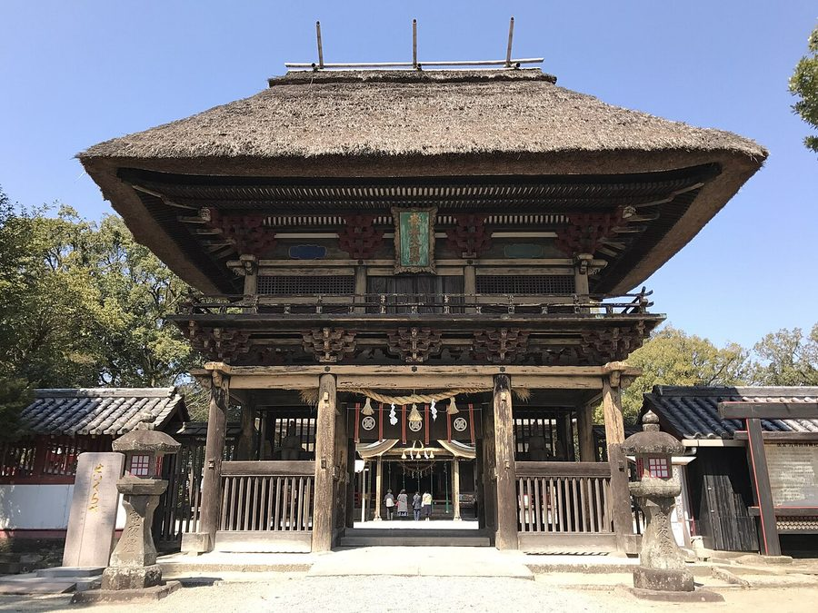
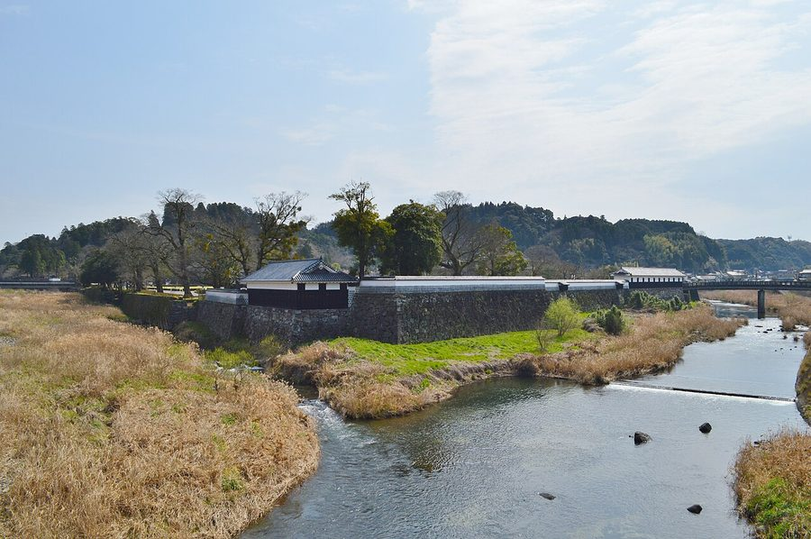
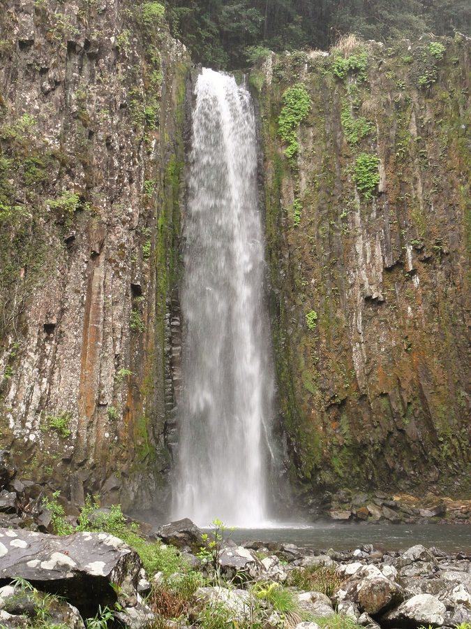
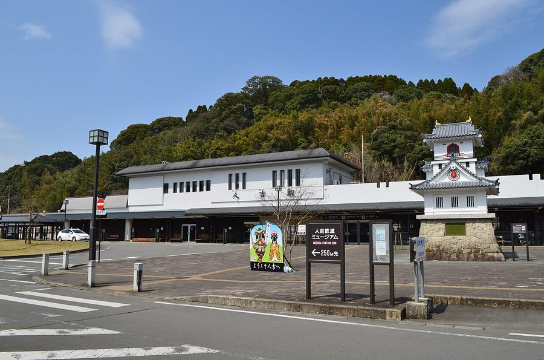

熊本県人吉市の日帰り温泉・銭湯・サウナ（27件）
寄り道スポット検索アプリ「ヨッテコ」の収録データから、熊本県人吉市の日帰り温泉・銭湯・サウナを営業時間・料金つきで一覧にしました（2026年8月時点）。
最も安いのは中神温泉（200円）。最も遅くまで入れるのは相良路の湯 おおが（24:00まで）。朝風呂なら人吉温泉 堤温泉（5:00開店）。
熊本県人吉市はどんなまち？
数字で見る🔍熊本県人吉市
まちの横顔




- 地形と気候: 熊本県の最南端に位置し、熊本市からは直線で約70km南にあります。九州山地に囲まれた人吉盆地の西端に球磨川が東から西へ貫流し、万江川や山田川など多くの支流が流れ込みます。盆地特有の寒暖差が大きく、夏は真夏日が70〜80日、冬は冬日が50日ほどあり、年降水量は2,500〜3,000ミリです。冬の晴れた朝には濃霧が発生しやすく、霧の発生日数の多さでも知られています。
- 観光: 球磨川沿いの温泉と川下りで知られ、人吉・球磨地方の中心地です。人吉藩相良氏の城下町として栄え、中心部には古くからの町並みが残ることから「小京都」とも呼ばれます。市内中心部には熊本県内で最初に国宝に指定された青井阿蘇神社があり、2015年には近隣の球磨郡の町村とともに「相良700年が生んだ保守と進取の文化 ～日本でもっとも豊かな隠れ里―人吉球磨―」として日本遺産に認定されました。
寄り道充実度（全国偏差値）
偏差値・順位は、ヨッテコ収録データ（2026年8月時点・26,033件）を市区町村別に集計した施設数の全国分布（1,728市区町村）から毎回算出しています。カードを押すとカテゴリ別の分析に切り替わります。
日帰り温泉から見た熊本県人吉市
市内の日帰り温泉は27件、全国82位タイ（上位4.7%）。——湯の選択肢は、全国の上位5%に入る。
- 30%——露天風呂の割合は、全国水準（46%）に届きません。湯を楽しむ舞台は、屋外ではなく屋内に寄っています。
- 100%の店が天然温泉です。全国水準は67%です。球磨川沿いの温泉と川下りで知られる人吉・球磨地方の中心地。お湯があること自体が出発点になっているまちです。
- サウナを備える店は30%。全国水準（52%）より控えめです。サウナで整えるより、湯そのものに浸かりに行くまちです。
- 入浴料の中央値は400円でした（判明23件）。全国の650円より38%低い水準です。400円を目安にしておけば、多くの店で足ります。
出典: 施設データ=ヨッテコ収録データ（26,033件・2026年8月時点）。偏差値・全国順位・全国水準は全1,728市区町村の分布から毎回算出。 / 人口=総務省「住民基本台帳に基づく人口、人口動態及び世帯数」（2026年1月1日現在） / 面積=国土地理院「全国都道府県市区町村別面積調」（2026年4月1日時点） / 森林率=農林水産省「2025年農林業センサス（農山村地域調査）」市区町村別林野率（2025年、林野率（林野面積÷総土地面積）） / 年平均気温=気象庁「平年値（1991-2020年）」。市区町村の代表点（国土交通省「大字・町丁目レベル位置参照情報」）から最も近い観測点の値 / まちの解説=日本語版Wikipedia「人吉市」（https://ja.wikipedia.org/wiki/人吉市、2026年8月21日取得、CC BY-SA 4.0） / 写真=Wikimedia Commons（各キャプションに作者・ライセンスを記載）
曜日別の営業施設数
| 月 | 火 | 水 | 木 | 金 | 土 | 日 |
|---|---|---|---|---|---|---|
| 27 | 27 | 27 | 27 | 27 | 27 | 27 |
営業時間データのある27件すべてが週7日営業しています。
入浴料金の分布（大人）
| 500円以下 | 15件 | |
| 501〜800円 | 3件 | |
| 801〜1,200円 | 3件 | |
| 1,201円以上 | 2件 |
料金が確認できた23件で集計。
施設一覧
| 施設 | 営業時間 | 料金（大人） |
|---|---|---|
| SUZUMIDO ONSEN 涼水戸温泉 天然温泉 | 09:00〜21:00 | 400円 |
| いわい温泉 ビジネスホテルひのき屋 天然温泉 人吉の温泉。さ蔵は100%掛け流しの天然温泉。ひのき屋は24時間営業。両施設合わせて複数の浴場。 | 00:00〜24:00 | 500円 |
| いわい温泉 湯の宿 さ蔵 天然温泉サウナ | 07:00〜22:30 | 500円 |
| お宿と温泉 人吉いわくらの杜 石庭 天然温泉露天風呂 磐座が鎮座する山の掛け流し温泉で、源泉100%の天然温泉。球磨川の景色を望む露天風呂が特徴。 | 11:00〜20:00 | 500円 |
| しらさぎ荘 しらさぎの湯 天然温泉 築100年の老舗旅館を令和5年4月に新築復興。人吉温泉の美肌の湯と鯉・川魚料理で知られる。 | 12:00〜21:00 | 800円 |
| ヴェルネス人吉 人吉中央温泉 天然温泉サウナ | 10:00〜22:00 | 800円 |
| 三浦屋温泉ビジネスホテル 天然温泉 ナトリウム-炭酸水素塩・塩化物泉の温泉を使った公衆浴場。毎日換水・清掃を実施し、肌がツルツル・スベスベする湯上がりが特徴… | 06:00〜09:00 | 300円 |
| 中神温泉 天然温泉 田んぼの中に佇む地元御用達の温泉。豊富な湯量と適温（39度）で肌にやさしい泉質が特徴。 | 13:00〜22:00 | 200円 |
| 人吉市まち・ひと・しごと総合交流館 くまりば 天然温泉 熊本県人吉市の市民交流施設くまりば内にある日帰り温泉で、アルカリ性単純温泉を楽しめる。 | 13:00〜21:00 | 650円 |
| 人吉旅館 天然温泉 | 08:00〜19:00 | 1,000円 |
| 人吉温泉 あゆの里 天然温泉露天風呂サウナ 球磨川と人吉城址を望む露天風呂が自慢。500年以上の歴史を持つ人吉温泉の老舗施設で、自家源泉からの飲泉が特徴。 | 15:00〜24:00 | 2,000円 |
| 人吉温泉 ホテル朝陽館 天然温泉 人吉温泉のビジネスホテル。天然温泉大浴場を完備し、立ち寄り入浴も対応。 | 15:00〜21:00 | 400円 |
| 人吉温泉 堤温泉 天然温泉 大正10年創業の人吉で最も古い公衆浴場。懐かしい雰囲気が特徴で、もみじ模様のタイルが施された浴槽が印象的。 | 05:00〜08:00 | 400円 |
| 人吉温泉 美人名湯 ホテル華の荘 天然温泉露天風呂サウナ | 06:00〜23:00 | — |
| 人吉温泉 翠嵐楼 天然温泉露天風呂サウナ 人吉温泉の美人の湯。3つの源泉を持ち、全て源泉かけ流し。スイートルーム、セミスイートルームに温泉風呂付き。 | 11:00〜13:30 | 1,000円 |
| 人吉温泉 芳野旅館 天然温泉露天風呂 | 13:00〜20:00 | — |
| 人吉温泉 貸切湯 癒しの杜 天然温泉 18室の貸切湯で源泉かけ流し。坪庭付き露天風呂付きで、バリアフリー浴室も用意。 | 13:00〜23:00 ※曜日により異なる | 1,100円 |
| 人吉温泉 鍋屋本館 天然温泉サウナ 2020年の球磨川豪雨災害からの復興で新館建設。球磨川を一望できる展望大浴場が特徴。伝統と革新が融合した湯宿。 | 15:00〜22:00 | — |
| 人吉温泉 鶴亀温泉 天然温泉 昭和初期創業の共同浴場。番台や浴場などの昔ながらの雰囲気が残り、地元住民に長年愛されている。 | 14:00〜21:00 | 200円 |
| 人吉温泉元湯 天然温泉 創業昭和9年の昔ながらの公衆温泉 | 07:00〜12:00 | 300円 |
| 人吉温泉駅前 ビジネスホテル八和 天然温泉 | 07:00〜23:00 | — |
| 天然温泉かけ流し 幸福温泉 天然温泉露天風呂サウナ 天然温泉かけ流しでラドン含有。人吉球磨地区の美人の湯を源泉から活かした施設。 | 11:00〜21:00 | 400円 |
| 炭酸泉の里 華まき温泉 天然温泉 田園風景に囲まれた隠れ家的な炭酸泉。体につく気泡が心地よく、微炭酸で肌がつるつるになると評判。 | 10:00〜20:00 ※曜日により異なる | 400円 |
| 相良藩 願成寺温泉 天然温泉 古来より相良領主に愛された公共浴場。弱アルカリ性の美人の湯で、独特の舟形浴槽が特徴。 | 06:00〜23:00 | 300円 |
| 相良路の湯 おおが 天然温泉 リグナイト泉（植物性ミネラル含有）と天然ラドン含有の「奇跡の温泉」として知られる | 00:00〜24:00 | 400円 |
| 筌場温泉 花手箱 天然温泉露天風呂サウナ | 08:00〜20:00 | 300円 |
| 薬師の湯宿 龍乃榊 天然温泉露天風呂 自家源泉の薬師の湯を持つ温泉宿。源泉温度55度のナトリウム-炭酸水素塩・硫酸塩温泉で、露天風呂で庭園を眺めながら贅沢に入… | 06:00〜22:00 | 2,000円 |